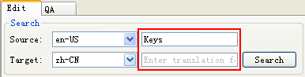
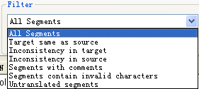
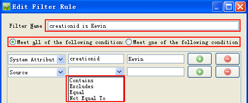
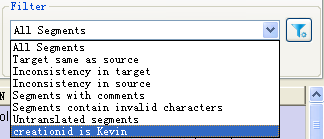

Heartsome TMX Editor 8 offers search and filter functionality to facilitate your TMX and TM maintenance. Read on for more details.
You can search a loaded TMX and TM to filter out segments thatcontain the keywords you have entered in the Source or Target fields.

-
Filter name:This is the name of your filter. When it is enabled, it will be listed in the Filters drop-down.
-
Combination of conditions: Meet all of the following conditions or one of the following conditions.
-
Custom content: You can set conditions for source, translation, comments, system attributes and custom attributes.
-
Operator: Operators include Contains, Excludes, Equals and Not Equal To.
Select the built-in filters from the drop-down list under the Filter to filter out the desired content. Your customized filters also are listed here once you have added them from Customize Filters

When you select built-in filters, you may also check Ignore case and Ignore tags to get more results.
 Special note:Keyword searching and
built-in filters are not interrelated.
Special note:Keyword searching and
built-in filters are not interrelated.
The program provides you with flexible custom filters allowing you to set filter conditions according to your needs. You may enable or disable them.
To customize filters:
1. Click on the  button. The Custom Filter dialog box will
open.
button. The Custom Filter dialog box will
open.

2. Click the New button. The Add Filter Rule dialog box will open.

You may add more conditions or delete any condition.
When you finish creating the filter, the filter will be listed on Customize Filter dialog box, where you can check the filter to enable it from Enable column.
Example: The customized filter “Kevin创建的句子” is listed under the Filter.
